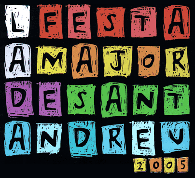

|  |
|
|||||||||||
|
|
|||
| 5
de la tarda (17.00 h.) |
-9a
MÀSTER CLASS AERÒBIC I AERÒBIC AMB BICICLETA (spinning) Inici: gimnàs del Club Natació Sant Andreu. De 5 a 6 de la tarda aeròbic i de 2/4 de 7 a 2/4 de 8, aeròbic amb bicicleta (spinning) Organitza: Club Natació Sant Andreu Observacions: regal d'una samarreta als 100 primers inscrits |
||
| 2/4 de 5 de la tarda (16.30 h.) | -LA
ESPOSA CHISMOSA FI
DE FESTA AMB VARIETATS, MÚSICA, CANÇONS I POESIA Lloc: Casal de la Gent Gran de Sant Andreu Organitza: Casal de la Gent Gran de Sant Andreu Descripció: representació teatral a càrrec del grup Renacer del Casal de la Gent Gran de Sants |
||
| 6 de la tarda (18.00 h.) | -LLETRA
PETITA Lloc: sala infantil de la Biblioteca Ignasi Iglésias (Can Fabra) Organitza: Biblioteca Ignasi Iglésias Descripció: enreda't amb l'acció; correu electrònic des de Buenos Aires. Eva Blanco |
||
| 9 de la nit (21.00 h.) | -SOPAR
D'ANIVERSARI PROJECCIÓ
AUDIOVISUAL: ACTIVITATS CELEBRACIÓ 75è ANIVERSARI Lloc: sala infantil de la Biblioteca Ignasi Iglésias (Can Fabra) Organitza: Agrupació Excursionista Muntanya Descripció: sopar d'aniversari on es lliuraran les ensenyes d'or i argent |
||
| 9
de la nit (21.00 h.) |
-BICIFARRA Lloc d'inici: El Brot Organitza: Assemblea de Festes Alternatives de Sant Andreu |
||
| 10 de la nit (22.00 h.) | -DESPULLA'T,
GERMANA Lloc: SAT! Sant Andreu Teatre Organitza: SAT! Sant Andreu Teatre Descripció: obra presentada per la companyia DIDASCÀLIA |
||
| 11 de la nit (23.00 h.) | -MÚSICA
AMB EL CANTAUTOR RAMON HERNÁNDEZ Lloc: Bar del Casal Catòlic de Sant Andreu Organitza: Jovent del Casal Catòlic de Sant Andreu |
||
| 12 de la nit (18.00 h.) | -CONCERT
DE WORLD MUSIC Lloc: Bar Versalles Organitza: Bar Versalles |
||
|
|||
| 2/4
de 8 del matí (08.00 h.) |
-DESPERTADA
INFERNAL Inici: plaça Orfila Organitza: La Satànica de Sant Andreu Descripció: els diablons faran una cercavila pels carrers de Sant Andreu tirant petards per despertar la gent. |
||
| 8 del matí (08.00 h.) | -MATINADES Lloc d'inici: plaça Orfila Organitza: Germandat de Trabucaires, Geganters i Grallers de Sant Andreu Descripció: recorregut per carrers de Sant Andreu de grups de grallers i tabalers vinguts d'arreu |
||
| 8 del matí (08.00 h.) | -DESPERTADA
TRABUCAIRE amb 22 salves en honor
de Sant Andreu, patró de la vila Inici: plaça Orfila Organitza: Germandat de Trabucaires, Geganters i Grallers de Sant Andreu Descripció: recorregut per carrers de Sant Andreu fent trabucades per despertar tothom amb trabucaires d'arreu dels Països Catalans |
||
| 8 del matí (08.00 h.) | -8a
PUJADA A PEU AL TIBIDABO Sortida: rambla Fabra i Puig. davant del Club Natació Sant Andreu Organitza: Club Natació Sant Andreu Observacions: 20Km. Cal portar esmorzar i begudes. Inscripcions gratuïtes fins al 25 de novembre |
||
| 9 del matí (09.00 h.) | -BOTIFARRADA
PIC'S Lloc: rambla Fabra i Puig amb Gran de Sant Andreu Organitza: AE i G Gregal Descripció: botifarrada popular a càrrec dels pioners i caravel·les de l'AE i G Gregal. Botifarres bones i que refresques! |
||
| 9 del matí (09.00 h.) | -10è
CAMPIONAT DE TENNIS TAULA Lloc: sala de tennis taula Organitza: Club Natació Sant Andreu Observacions: inscripcions fins al 21 de novembre o fins arribar a 32 participants. Inscripcions gratuïtes. Sistema de competició "Copa Davis" |
||
| 9 del matí (09.00 h.) | -1r
CAMPIONAT D'ESCACS - PARTIDES RÀPIDES Lloc: Club Natació Sant Andreu Organitza: Club Natació Sant Andreu Observacions: inscripcions gratuïtes fins al 21 de novembre o fins arribar a 32 participants |
||
| 2/4 d'11 del matí (10.30 h.) | -TREMOLOR
SATÀNIC Lloc: plaça Orfila Organitza: La Satànica de Sant Andreu Descripció: gran traca per despertar tot Sant Andreu! Si és que queda algú que dormi! |
||
| 11 del matí (11.00 h.) | -2n
CIRCUIT DE TREN DE 5 POLSADES AMB MÀQUINES DE VAPOR Lloc: plaça de Can Fabra Organitza: Agrupament Ferroviari de Barcelona |
||
| 2/4 de 12 del matí (11.30 h.) | -PREGÓ
DE FESTA MAJOR a càrrec d'en QUICO TUR, esportista olímpic andreuenc Lloc: balcó de l'Ajuntament de Sant Andreu, plaça Orfila Organitza: Comissió de Festes de Sant Andreu de Palomar Col·labora: 'Districte' de Sant Andreu |
||
| 3/4 de 12 del migdia (11.45 h.) | -BAIXADA
EN RÀPPEL DEL CAMPANAR Lloc: Parròquia de Sant Andreu de Palomar Organitza: Comissió de Festes de Sant Andreu de Palomar Col·labora: Agrupament Escolta Jaume I |
||
| 12 del migdia (12.00 h.) | -REPICADA
DE CAMPANES Lloc: Parròquia de Sant Andreu de Palomar |
||
| 12 del migdia (12.00 h.) | -CERCAVILA
DE FESTA MAJOR Inici: passeig Torras i Bages / plaça Orfila Organitza: Germandat de Trabucaires, Geganters i Grallers de Sant Andreu Col·labora: Comissió de Festes de Sant Andreu de Palomar |
||
| 12 del migdia (12.00 h.) | -LA
PERA LLIMONERA
presenta GRIM,
GRIM ó LA
BLANCALLOPS I ELS SET PORQUET Lloc: SAT! Sant Andreu Teatre Organitza: SAT! Sant Andreu Teatre Descripció: espectacle infantil a partir de 4 anys |
||
| 12 del migdia (12.00 h.) | -SAC
DE RONDALLES Lloc: SAT! Sant Andreu Teatre Organitza: SAT! Sant Andreu Teatre Descripció: espectacle infantil; a partir cels 4 anys |
||
| 12 del migdia (12.00 h.) | -RECEPCIÓ
JUNTA DIRECTIVA I SALUTACIÓ DEL PRESIDENT - LLIURAMENT ESCUT D'ARGENT (Sala d'actes) - VERMUT ESPECIAL DIA DEL SOCI (Bar Els Catas) Lloc: Centre Cultural Els Catalanistes Organitza: Junta del Centre Cultural Els Catalanistes Descripció: tómbola especial dia del soci que estarà en funcionament fins a esgotar els premis |
||
| 2/4 d'1 del migdia (12.30 h.) | -JORNADA
DE PORTES OBERTES DE AV DE SANT ANDREU NORD - TRAMUNTANA - CONCURS DE TRUITES Lloc: A.VV. de Sant Andreu-Nord Tramuntana Organitza: A.VV. de Sant Andreu-Nord Tramuntana |
||
| 2/4 d'1 del migdia (12.30 h.) | -V
DIADA CASTELLERA A SANT ANDREU DE PALOMAR Castellers de Sants Castellers de Sant Cugat Castellers de Sant Feliu Lloc: plaça Orfila Organitza: Comissió de Festes de Sant Andreu de Palomar |
||
| 1 del migdia (13.00 h.) | -DEGUSTACIÓ
DE TASTETS AL MERCAT Lloc: plaça del Mercat Organitza: Mercat de Sant Andreu i zona Mercadal Descripció: podreu degustar cuina de mercat cuinada per la gent del Mercat |
||
| 2 de la tarda (14.00 h.) | -DINAR
DE CELEBRACIÓ DEL DIA DEL SOCI, OBERT A TOTHOM Lloc: Centre Cultural Els Catalanistes Organitza: Junta del Centre Cultural Els Catalanistes Descripció: confirmeu-ne l'assistència al mateix centre |
||
| 5 de la tarda (17.00 h.) | -3a
TROBADA DE CORALS INFANTILS A SANT ANDREU Lloc: Església de Sant Pacià Organitza: Coral Infantil Sant Andreu |
||
| 5 de la tarda (17.00 h.) | -MARATÓ
DE VÍDEO DE LA TELENOVEL·LA 'ELS JOVES' Lloc: Casal Popular Miquel Martí i Pol Organitza: Assemblea de Joves de Sant Andreu (AJStA) i Assemblea de Sant Andreu - Nou Barris d'Endavant (OSAN) |
||
| 2/4 de 6 de la tarda (17.30 h.) | -BINGO
ESPECIAL DIA DEL SOCI, OBERT A TOTHOM Lloc: Centre Cultural Els Catalanistes Organitza: Junta del Centre Cultural Els Catalanistes |
||
| 6 de la tarda (18.00 h.) | -"AMÀLIA
AMÈLIA EMILIA" Lloc: teatre del Casal Catòlic de Sant Andreu Organitza: Casal Catòlic de Sant Andreu Descripció: càrrec de l'agrupació teatral de Calaf. Música en directe |
||
| 6 de la tarda (18.00 h.) | -FESTIVAL
ESPECIAL DIA DEL SOCI - CLOENDA I XOCOLATA AMB XURROS Lloc: Centre Cultural Els Catalanistes Organitza: Junta del Centre Cultural Els Catalanistes Descripció: festival líric i poètic amb teatre i dansa |
||
| 6 de la tarda (18.00 h.) | -PRESENTACIÓ
DEL SETMANARI DELS MOVIMENTS SOCIALS "DIRECTA" Lloc: El Brot Organitza: Assemblea de Festes Alternatives de Sant Andreu |
||
| 6 de la tarda (18.00 h.) | -DESPULLA'T,
GERMANA Lloc: SAT! Sant Andreu Teatre Organitza: SAT! Sant Andreu Teatre Descripció: obra presentada per la companyia DIDASCÀLIA |
||
| 2/4 de 7 de la tarda (18.30 h.) | -POLÍTICAMENT
INCORRECTE Lloc: local de Sant Pacià (Monges cantonada Sòcrates) Organitza: Grup teatral Antifaz Descripció: representació teatral. Una comèdia per riure i passar-s'ho molt bé |
||
| 7 de la tarda (19.00 h.) | -CONCERT
DE FESTA MAJOR AMB L'ECO DE CATALUNYA Lloc: estatge de l'Ateneu Sant Andreu Organitza: Orfeó l'Eco de Catalunya Descripció: concert de cant coral a càrrec de la Coral Plançons i l'Orfeó Eco de Catalunya |
||
| 7 de la tarda (19.00 h.) |
- HOMENATGE POPULAR
AL NOI BALIARDA |
||
|
|||
| 2/4
de 10 del matí (09.30 h.) |
-CAMPIONAT
SOCIAL DE BOTXESDespertada Infernal Lloc: pistes del Parc de la Pegaso Organitza: Casal de la Gent de Gran de Sant Andreu |
||
| 2/4 de 5 de la tarda (16.30 h.) | -GRAN
BALL Lloc: Casal de la Gent de Gran de Sant Andreu Organitza: Casal de la Gent de Gran de Sant Andreu Descripció: ball de Festa Major amenitzat per Carles Rives |
||
| 8 del vespre (20.00 h.) |
-LA GUERRA CIVIL
VISTA DES DEL VERSALLES (1936-1939) |
||
|
|||
| 2/4
de 5 de la tarda (16.30 h.) |
-GRUP
L'ALEGRIA Lloc: Casal de la Gent de Gran de Sant Andreu Organitza: Casal de la Gent de Gran de Sant Andreu Descripció: espectacle teatral |
||
| 2/4 de 6 de la tarda (17.30 h.) | -CONFERÈNCIA:
DRETS I DEURES DE LA GENT GRAN Lloc: Centre Cívic Sant Andreu Organitza: Associació en Defensa de la Gent Gran |
||
|
|||
| 4
de la tarda (16.00 h.) |
-1r
dia: 4t INTERCLUB DE BILLAR CLUB NATACIÓ SANT ANDREU - CASAL D'AVIS SANT ANDREU Lloc: sala de billar del Club Natació Sant Andreu Organitza: Club Natació Sant Andreu Descripció: partides d'exhibició |
||
| 2/4 de 5 de la tarda (16.30 h.) | -HAVANERES Lloc: Casal de la Gent de Gran de Sant Andreu Organitza: Casal de la Gent de Gran de Sant Andreu Descripció: a càrrec d'un grup de la Garriga |
||
| 6 de la tarda (18.00 h.) | -XOCOLATADA
POPULAR PER LA DIADA DE SANT ANDREU Lloc: plaça Comerç Organitza: Comissió de Festes de Sant Andreu de Palomar Col·labora: Bar Versalles Descripció: xocolatada popular amb l'animació de Tània Moreno |
||
| 2/4 de 7 de la tarda (18.30 h.) | -ACTUACIÓ
DEL MAG VILAJOANA Lloc: Casal de la Gent de Gran de Sant Andreu Organitza: Casal de la Gent de Gran de Sant Andreu |
||
| 7 del vespre (19.00 h.) | -PREMIS
SANT ANDREU 2005 Lloc: Ajuntament de Sant Andreu Organitza: 'Districte' de Sant Andreu |
||
| 8 del vespre (20.00 h.) | -Missa
Solemne Lloc:Temple Parròquia de Sant Andreu de Palomar Organitza: Parròquia de Sant Andreu |
||
| 2/4 d'11 de la nit (22.30 h.) | -CONCERT
DIADA DE SANT ANDREU Lloc: Bar Versalles Organitza: Comissió de Festes de Sant Andreu de Palomar Col·labora: Bar Versalles i Associació comerciants zona Mercadal Descripció: concert a càrrec del grup DOWN HOME. Entrada limitada segons l'aforament del local |
|
|||
| 11
del matí (11.00 h.) |
-LLIURAMENT
DE TROFEUS Lloc: Casal de la Gent de Gran de Sant Andreu Organitza: Casal de la Gent de Gran de Sant Andreu |
||
| 4 de la tarda (16.00 h.) | -2n
dia: 4t INTERCLUB DE BILLAR CLUB NATACIÓ SANT ANDREU - CASAL D'AVIS SANT ANDREU Lloc: sala de billar del Club Natació Sant Andreu Organitza: Club Natació Sant Andreu Descripció: partides d'exhibició |
||
| 2/4 de 5 de la tarda (16.30 h.) | -LOS
CHIQUITINES -GRAN FI DE FESTA Lloc: Casal de la Gent de Gran de Sant Andreu Organitza: Casal de la Gent de Gran de Sant Andreu Descripció: representació teatral a càrrec del grup artístic del nostre Casal |
||
| 1/4 de 7 de la tarda (18.15 h.) | -NASCUTS
PER LLEGIR Lloc: sala infantil de la biblioteca Ignasi Iglésias (Can Fabra) Organitza: Biblioteca Ignasi Iglésias Descripció: contes menuts per a gent menuda a de l'Estrella dels Contes |
||
| 7 del vespre (19.00 h.) | -FESTIVAL
DE CINEMA UN ALTRE CONSUM ÉS POSSIBLE Lloc: Auditori de Can Fabra Organitza: La XarXa de Sant Andreu Descripció: cicle de cinema internacional que durarà de l'1 al 3 de desembre |
||
| 8 del vespre (20.00 h.) | -RECITAL
DE POESIA A CÀRREC DE ZAHÚRDA Lloc: local de ICV Organitza: ICV - EuiA Lloc: carrer Bascònia Organitza: Escola Bressol el Palomar |
||
| 9 de la nit (21.00 h.) | -FÚTIL Lloc: SAT! Sant Andreu Teatre Organitza: SAT! Sant Andreu Teatre Descripció: dansa contemporània a càrrec de la companyia THOMAS NOONE DANCE |
||
| 10 de la nit (22.00 h.) | -BICICLETADA
GOLFA BARRETINAIRE Inici: plaça del comerç Organitza: Confraria Barretinaire Descripció: bicicletada popular de Sant Andreu a la plaça Reial (Barcelona) i tornada |
||
|
|||
| 10
del matí (10.00 h.) |
-CAMPIONAT
SOCIAL DE BOTXES Lloc: Casal Bascònia Organitza: Casal Bascònia |
||
| 2/4 de 12 del migdia (11.30 h.) | -MERCADILLO
GRATUÏT Lloc: plaça de Can Fabra Organitza: Assemblea de Festes Alternatives de Sant Andreu |
||
| 2/4 de 5 de la tarda (16.30 h.) | -TARDOR
LLUMINOSA Lloc: Casal de la Gent de Gran de Sant Andreu Organitza: Casal de la Gent de Gran de Sant Andreu Descripció: xou teatral representat per la gent del nostre Casal |
||
| 6 de la tarda (18.00 h.) | -XOCOLATADA
I ANIMACIÓ INFANTIL Lloc: plaça del Mercat Organitza: Mercat de Sant Andreu i Zona Mercadal |
||
| 6 de la tarda (18.00 h.) | -LLETRA
PETITA Lloc: sala infantil de la Biblioteca Ignasi Iglésias (Can Fabra) Organitza: Biblioteca Ignasi Iglésias Descripció: enreda't amb l'acció; correu electrònic des de Buenos Aires. Eva Blanco |
||
| 7 del vespre (19.00 h.) | -FESTIVAL
DE CINEMA UN ALTRE CONSUM ÉS POSSIBLE Lloc: Auditori de Can Fabra Organitza: La XarXa de Sant Andreu Descripció: cicle de cinema internacional que durarà de l'1 al 3 de desembre |
||
| 9 de la nit (21.00 h.) | -CONCERT
BAILONGO CONTRA LA IMPUNITAT POLICIAL Lloc: carrer Josep Soldevila Organitza: Assemblea de Festes Alternatives de Sant Andreu |
||
| 9 de la nit (21.00 h.) | -CINE-FÒRUM
SOBRE LA IMMIGRACIÓ AMB LA PEL·LÍCULA, EL ODIO Lloc: local ICV Organitza: Joves d'esquerra verda |
||
| 10 de la nit (22.00 h.) | -DESPULLA'T,
GERMANA Lloc: SAT! Sant Andreu Teatre Organitza: SAT! Sant Andreu Teatre Descripció: obra presentada per la companyia DIDASCÀLIA |
||
| 11 de la nit (23.00 h.) | -EL
PRIMER BALL DE FESTA MAJOR estrena de l'envelat - TRAFFIC - DISCOMÒBIL Lloc: Envelat de Festa Major Organitza: Penya barcelonista 100 x 100 Col·labora: Comissió de Festes de Sant Andreu de Palomar |
||
| 11 de la nit (23.00 h.) | -FESTA
PETARDA - PATXANGA Lloc: Casal Popular Miquel Martí i Pol Organitza: Assemblea de Joves de Sant Andreu (AJStA) i Assemblea de Sant Andreu - Nou Barris d'Endavant (OSAN) Observacions: vine disfressat/da! |
||
| 12 de la matinada (24.00 h.) | -CONCERT
DE WORLD MUSIC Lloc: Bar Versalles Organitza: Bar Versalles |
||
|
|||
| 8
del matí (08.00 h.) |
-11è
CAMPIONAT, 12 HORES DE FRONTENNIS Lloc: pista del frontó del Club Natació Sant Andreu Organitza: Club Natació Sant Andreu Observacions: inscripcions gratuïtes fins al 28 de novembre |
||
| 9 del matí (09.00 h.) | -1r
CAMPIONAT DE DÒMINO Lloc: local social del Club Natació Sant Andreu Organitza: Club Natació Sant Andreu Observacions: inscripcions gratuïtes fins al 28 de novembre o fins arribar a 32 participants. Sistema de competició de partides eliminatòries a 40 punts |
||
| 10 del matí (10.00 h.) | -PRESENTACIÓ
DE LA BÈSTIA -CERCAVILA -EXPOSICIÓ Inici: plaça Orfila Organitza: La Satànica de Sant Andreu Descripció: cercavila de plaça Orfila, plaça Comerç i voltants, arribada a la plaça de Can Fabra on quedarà exposada |
||
| 10 del matí (10.00 h.) | -MOSTRA
DE PINTURA A ONZE DE SETEMBRE -CONCURS DE DIBUIX INTANTIL Lloc: Rambla Onze de Setembre Organitza: Grup de Pintors de Sant Andreu |
||
| 10 del matí (10.00 h.) | -8a
TROBADA DE PLAQUES DE CAVA Lloc: Rambla de Fabra i Puig, 47 Organitza: Club Natació Sant Andreu Descripció: trobada d'intercanvi de plaques. Es posarà a la venda una ampolla de cava amb la placa commemorativa |
||
| 2/4 de 12 del migdia (11.30 h.) | -MERCADILLO
GRATUÏT Lloc: plaça de Can Fabra Organitza: Assemblea de Festes Alternatives de Sant Andreu |
||
| 12 del migdia (12.00 h.) |
-SESSIÓ DE CINEMA
INFANTIL EN CATALÀ |
||
| 12 del migdia (12.00 h.) | -LLETRA
PETITA Lloc: sala infantil de la Biblioteca Ignasi Iglésias (Can Fabra) Organitza: Biblioteca Ignasi Iglésias Descripció: enreda't amb l'acció; correu electrònic des de Buenos Aires. Eva Blanco |
||
| 12 del migdia (12.00 h.) | -TALLER
DE DANSA CATALANA Lloc: plaça Orfila Organitza: Esbart Maragall Descripció: taller de dansa catalana per a totes les edats. Us ensenyarem a ballar danses tradicionals del nostre país |
||
| 2 de la tarda (14.00 h.) | -ARROSSADA
DE CELEBRACIÓ DELS 25 ANYS DEL CAP A PEUS I DEL NÚMERO 500 Lloc: Envelat de Festa Major Organització: AV de Sant Andreu Observacions: podeu comprar els tiquets a l'associació per 10 euros fins al mateix dia |
||
| 2 de la tarda (14.00 h.) | -DINAR
DE FESTA MAJOR Lloc: Centre Cultural Els Catalanistes Organitza: Partit Socialista de Catalunya, PSC - Sant Andreu |
||
| 2 de la tarda (14.00 h.) | -DINAR
POPULAR VEGETARIÀConcert del cantautor Merino Lloc: carrer Josep Soldevila Organitza: Assemblea de Festes Alternatives de Sant Andreu |
||
| 4 de la tarda (16.00 h.) | -JOCS
DE TAULA DIUMENGES ACTIUS Lloc: carrer Josep Soldevila Organitza: Assemblea de Festes Alternatives de Sant Andreu |
||
| 5 de la tarda (17.00 h.) | -CONCERT
AMB LA BANDA DE BELLVITGE Lloc: Casal de la Gent de Gran de Sant Andreu Organitza: Casal de la Gent de Gran de Sant Andreu |
||
| 6 de la tarda (18.00 h.) | -LLETRA
PETITA Lloc: sala infantil de la Biblioteca Ignasi Iglésias (Can Fabra) Organitza: Biblioteca Ignasi Iglésias Descripció: enreda't amb l'acció; correu electrònic des de Buenos Aires. Eva Blanco |
||
| 6 de la tarda (18.00 h.) | -LA
LLUNA EN UN COVE Lloc: SAT! Sant Andreu Teatre Organitza: SAT! Sant Andreu Teatre Descripció: circ i pallassos; a partir de 3 anys; a càrrec de la companyia CIRQUET CONFETTI |
||
| 7 del vespre (19.00 h.) | -FESTIVAL
DE PATINATGE Lloc: Poliesportiu Municipal de Sant Andreu Organitza: AE Sant Andreu - UBAE |
||
| 7 del vespre (19.00 h.) | -FESTIVAL
DE CINEMA UN ALTRE CONSUM ÉS POSSIBLE Lloc: Auditori de Can Fabra Organitza: La XarXa de Sant Andreu Descripció: cicle de cinema internacional que durarà de l'1 al 3 de desembre |
||
| 9 de la nit (21.00 h.) | -CONCERT
PUNK CONTRA EL CIVISME INSTITUCIONAL Lloc: carrer Josep Soldevila Organitza: Assemblea de Festes Alternatives de Sant Andreu |
||
| 9 de la nit (21.00 h.) | -CORREFOC Inici: plaça Orfila Organitza: La Satànica de Sant Andreu, Els Diables de Sant Andreu i Comissió de Festes de Sant Andreu de Palomar Recorregut: plaça Orfila / Segre / Dr. Balari i Jovany / Otger / Sant Adrià / Gran / Abat Odó / Castellbell / Jorba / Pons i Gallarza / Sant Marià / Malats / plaça Orfila |
||
| 10 de la nit (22.00 h.) | -TEATRE:
ASSAIG GENERAL Lloc: Sala d'actes de la SC i E La Lira Organitza: Societat Cultural i Esportiva La Lira Descripció: Un heterogeni grup de joves d'una companyia de teatre amateur viu un emotiu i embolicat assaig general.... Humor i embolics amb sorpreses finals |
||
| 10 de la nit (22.00 h.) | -DESPULLA'T,
GERMANA Lloc: SAT! Sant Andreu Teatre Organitza: SAT! Sant Andreu Teatre Descripció: obra presentada per la companyia DIDASCÀLIA |
||
| 10 de la nit (22.00 h.) | -CONCERT -INSERSHOW -KILL (versions) -IGITAIA -DESPERTAFERRO Lloc: carrer Parellada Organitza: Assemblea de Joves de Sant Andreu (AJStA) i Assemblea de Sant Andreu - Nou Barris d'Endavant (OSAN) |
||
| 1/4 d'11 de la nit (22.15 h.) | -EXHIBICIÓ
DE BALLS DE SALÓ Lloc: Envelat de Festa Major Organitza: Ateneu de Sant Andreu Col·labora: Comissió de Festes de Sant Andreu de Palomar Descripció: a càrrec de la Núria i el Xavier, professors de balls de saló de l'Ateneu |
||
| 11 de la nit (23.00 h.) | -BALL
DE FESTA MAJOR - SALSETA DEL POBLE-SEC Lloc: Envelat de Festa Major Organitza: Comissió de Festes de Sant Andreu de Palomar |
||
| 12 de la matinada (24.00 h.) | -CONCERT
DE BLUES-JAZZ Lloc: Bar Versalles Organitza: Bar Versalles |
||
|
|||
| 9
del matí (09.00 h.) |
-10è
CAMPIONAT DE TENNIS TAULA FEMENÍ Lloc: sala de tennis de taula del Club Natació Sant Andreu Organitza: Club Natació Sant Andreu Observacions: inscripcions gratuïtes fins al 28 de novembre o fins arribar a 32 participants. Sistema de competició "Copa Davis". Mínim 16 participants |
||
| 2/4 d'11 del matí (22.15 h.) | -XOCOLATA
AMB XURROS Lloc: carrer Josep Soldevila Organitza: Assemblea de Festes Alternatives de Sant Andreu |
||
| 11 del matí (11.00 h.) | -IX
CONCURS INDIVIDUAL DE SARDANES REVESSES Lloc: SC i E La Lira - Grup Sardanista Maig Organitza: SC i E La Lira - Grup Sardanista Maig |
||
| 12 del migdia (12.00 h.) | -SANT
ANDREU DANSA Lloc: Envelat de Festa Major Organitza: Esbart Maragall Col·labora: Comissió de Festes de Sant Andreu de Palomar Descripció: festival de dansa catalana especialment dirigit als nostres infants. L'actuació serà a càrrec de l'escola de dansa catalana de l'Esbart Maragall |
||
| 12 del migdia (12.00 h.) | -LA
LLUNA EN UN COVE Lloc: SAT! Sant Andreu Teatre Organitza: SAT! Sant Andreu Teatre Descripció: Circ i pallassos; a partir dels 3 anys; a càrrec de la companyia CIRQUET CONFETTI |
||
| 12 del migdia (12.00 h.) | -PARTIT
DE FESTA MAJOR U.E. SANT ANDREU - FC BARCELONA B Lloc: Estadi Narcís Sala Organitza: Unió Esportiva Sant Andreu |
||
| 5 de la tarda (17.00 h.) | -TAULA
RODONA: SITUACIÓ HISTÒRICA I ACTUAL DELS MOVIMENTS SOCIALS A SANT ANDREU Lloc: carrer Josep Soldevila Organitza: Assemblea de Festes Alternatives de Sant Andreu |
||
| 6 de la tarda (18.00 h.) | -TEATRE:
ASSAIG GENERAL Lloc: Sala d'actes de la SC i E La Lira Organitza: Societat Cultural i Esportiva La Lira Descripció: un heterogeni grup de joves d'una companyia de teatre amateur viu un emotiu i embolicat assaig general... Humor i embolics amb sorpreses finals |
||
| 6 de la tarda (18.00 h.) | -DESPULLA'T
GERMANA Lloc: SAT! Sant Andreu Teatre Organitza: SAT! Sant Andreu Teatre Descripció: obra presentada per la companyia DIDASCÀLIA |
||
| 6 de la tarda (18.00 h.) | -PROJECCIÓ
DE LA PEL·LÍCULA "TEAM AMERICA" Lloc: Casal Popular Miquel Martí i Pol Organitza: Assemblea de Joves de Sant Andreu (AJStA) i Assemblea de Sant Andreu - Nou Barris d'Endavant (OSAN) |
||
| 2/4 de 7 de la tarda (18.30 h.) | -PRESENTACIÓ
URBANÍSTICA DE LES CASERNES Lloc: Associació de Veïns i Veïnes Sant Andreu-Nord Tramuntana, .......Passeig de Torras i Bages, 103 (edifici Casa Bloc) Organitza: Grup Sant Andreu Per Les Casernes |
||
| 7 del vespre (19.00 h.) | -TEATRE
EL TRAMPÓS ENTRAMPAT Lloc: Ateneu de Sant Andreu Organitza: Companyia: 'Bravo, bravo, que bé que ho fan' |
||
| 8 de la nit (20.00 h.) | -PROJECCIÓ
DE LA PEL·LÍCULA 'EL COMPLOT DELS ANELLS' Lloc: Casal Popular Miquel Martí i Pol Organitza: Assemblea de Joves de Sant Andreu (AJStA) i Assemblea de Sant Andreu - Nou Barris d'Endavant (OSAN |
||
| 2/4 de 9 de la nit (20.30 h.) | -JAM
SESSION Lloc: carrer Josep Soldevila Organitza: Assemblea de Festes Alternatives de Sant Andreu |
||
| 2/4 de 9 de la nit (20.30 h.) | -HAVANERES
i ROM CREMAT amb PORT VELLBall de Festa Major Lloc: Envelat de Festa Major Organitza: Comissió de Festes de Sant Andreu de Palomar |
||
|
|||
| 2
del migdia (14.00 h.) |
-DINAR
PRO ENCAUSATS EL 4 D'OCTUBRE -TALLER D'ESCRIPTURA DE CARTES A PERSONES PRESES Lloc: carrer Josep Soldevila Organitza: Assemblea de Festes Alternatives de Sant Andreu |
||
| 2/4 de 5 de la tarda (16.30 h.) | -BALL
DE GALA I CLOENDA DE LA FESTA MAJOR Lloc: Casal de la Gent de Gran de Sant Andreu Organitza: Casal de la Gent de Gran de Sant Andreu |
||
| 7 de la tarda (19.00 h.) | -BASCÒNIA
EN DIRECTE! Lloc: carrer Bascònia (entre Montpeller i Rubén Darío) Organitza: veïns i veïnes del carrer Bascònia Col·labora: Comissió de Festes de Sant Andreu de Palomar Descripció: música en directe, activitats, menjar i beure |
||
| 2/4 de 9 del vespre (209.30 h.) |
-BOTIFARRADA |
||
| 1/4 d'11 de la nit (22.15 h.) | -EXHIBICIÓ
DE BALLS DE SALÓ Lloc: Envelat de Festa Major Organitza: Grup de Dansa de Sant Pacià Col·labora: Comissió de Festes de Sant Andreu de Palomar |
||
| 2/4 d'11 de la nit (22.30 h.) | -HAVANERES
AMB EL GRUP MAR BRAVA Lloc: carrer Pons i Gallarza Organitza: veïns i veïnes del carrer Pons i Gallarza Col·labora: Comissió de Festes de Sant Andreu de Palomar |
||
| 11 de la nit (23.00 h.) | -CONCERT
BAILONGU -ORQUESTRA ORIGEN -DJ a càrrec de RADIO TRINITAT VELLA Lloc: Envelat de Festa Major Organitza: Comissió de Festes de Sant Andreu de Palomar |
||
| 11 de la nit (23.00 h.) | -CONCERT
DEL CANTAUTOR MERINO Lloc: Casal Popular Miquel Martí i Pol Organitza: Assemblea de Joves de Sant Andreu (AJStA) i Assemblea de Sant Andreu - Nou Barris d'Endavant (OSAN) |
||
|
|||
| 9
del matí (09.00 h.) |
-13è
CAMPIONAT DE PETANCA DE FESTA MAJOR Lloc 1a fase: Parc de la Pegaso 2a fase: pistes del Club Organitza: Club Natació Sant Andreu Observacions: inscripcions gratuïtes per triples abans del 28 de novembre |
||
| 10 del matí (10.00 h.) | -CAMPIONAT
PER EQUIPS DE PARTIDES RÀPIDES D'ESCACS Lloc: SC i E La Lira - Club d'escacs La Lira Organitza: SC i E La Lira - Club d'escacs La Lira |
||
| 10
del matí (cursa
infantil) i 11 del matí (cursa absoluta) (10.00 - 11.00 h.) |
-27a
CURSA POPULAR POBLE DE SANT ANDREU Inici: carrers de Sant Andreu Organitza: Club Natació Sant Andreu Observacions: cursa infantil de 1.000m. i cursa absoluta de 5Km aproximadament. Inscripcions gratuïtes fins al 2 de desembre a la secretaria social del club o per Internet: www.cnsandreu.com. |
||
| 2/4 d'11 del (109.30 h.) | -VII
TROBADA DE PUNTAIRES DE SANT ANDREU Lloc: Envelat de Festa Major Organitza: Associació puntaires districte de Sant Andreu Col·labora: Comissió de Festes de Sant Andreu de Palomar Observacions: les puntaires donaran el mocador a la gegantona Àvia Orfila |
||
| 11 del matí (11.00 h.) | -MATINAL
INFANTIL Lloc: carrer Josep Soldevila Organitza: Assemblea de Festes Alternatives de Sant Andreu |
||
| 12 del migdia (12.00 h.) | -2a
CERCAVILA CICLISTA: UN SANT ANDREU X VIURE! Inici: plaça Orfila Organitza: La XarXa de Sant Andreu Observacions: el recorregut inclourà el pas per 2 punts calents: TGV, la Coats SA i alguna sorpresa |
||
| De
4 a 6 de la tarda (16.00 a 18.00 h.) |
-CONTACONTES
INFANTIL Lloc: carrer Josep Soldevila Organitza: Assemblea de Festes Alternatives de Sant Andreu |
||
| 6 de la tarda (18.00 h.) | -TALLER
DE PINTURA NATURAL Lloc: carrer Josep Soldevila Organitza: Assemblea de Festes Alternatives de Sant Andreu |
||
| 6 de la tarda (18.00 h.) | -CINE-FÒRUM: -PROJECCIÓ DE LA PEL·LÍCULA "LA PESADILLA DE DARWIN" I DEBAT POSTERIOR Lloc: Envelat de Can Fabra Organitza: La XarXa de Sant Andreu i Comissió de Festes de Sant Andreu de Palomar |
||
| 6 de la tarda (18.00 h.) | -XERRADA
SOBRE COMUNITATS D'APRENETATGE: -EL PROJECTE, SURT! DE SANT ANDREU -ESCOLA TANIT DE SANTACO Lloc: Casal Popular Miquel Martí i Pol Organitza: Assemblea de Joves de Sant Andreu (AJStA) i Assemblea de Sant Andreu - Nou Barris d'Endavant (OSAN) |
||
| 10 de la nit (22.00 h.) | -CONCERT
DE TRIANDO, JAZZ-FUSIÓ Lloc: carrer Josep Soldevila Organitza: Assemblea de Festes Alternatives de Sant Andreu |
||
| 2/4 d'11 de la nit (22.30 h.) | -CONCERT
POP ACÚSTIC -AYALA I EL EFECTO SEIGARNIK Lloc: Local AVV de Sant Andreu Organitza: AVV de Sant Andreu |
||
|
|||
| 10
del matí (10.00 h.) |
-L'ESCOLA
VA DE FESTA MAJOR -PEP CALLAU I ELS PEPSICOLEN Lloc: Envelat de Festa Major Organitza: Comissió de Festes de Sant Andreu de Palomar |
||
| 11 del matí (19.30 h.) | -Cinema
Infantil Lloc: carrer Pons i Gallarza Organitza: Comissió Pons i Gallarza Observacions: vegeu al programa del carrer els títols |
||
| 5 de la tarda (17.00 h.) | -HOMENATGE
A LA VELLESA homenatjats: Sra. Cèlia Virgili i Gatell, 81 anys Sr. Constantino Martínez i Martínez, 81 anys Lloc: Envelat de Festa Major Organitza: Casal de la Gent Gran de Sant Andreu i Comissió de Festes de Sant Andreu de Palomar Descripció: espectacle teatral TARDOR LLUMINOSA a càrrec del Casal de la Gent Gran de Sant Andreu, dirigit per Antoni Senserrich |
||
| 5 de la tarda (17.00 h.) | -XERRADA:
PRESENT I PASSAT DE LA ZONA DE LA FABRA I COATS Lloc: carrer Josep Soldevila Organitza: Assemblea de Festes Alternatives de Sant Andreu |
||
| 9 del vespre (21.00 h.) | -SESSIÓ
GOLFA: CINEMA A LA FRESCA Lloc: carrer Josep Soldevila Organitza: Assemblea de Festes Alternatives de Sant Andreu |
||
| 11 de la nit (23.00 h.) | -FESTA
RUMBERA Lloc: Casal Popular Miquel Martí i Pol Organitza: Assemblea de Joves de Sant Andreu (AJStA) i Assemblea de Sant Andreu - Nou Barris d'Endavant (OSAN) |
||
| 11 de la nit (23.00 h.) | -NIT
DE ROCK AMB BLAZE Lloc: carrer Pons i Gallarza Organitza: veïns i veïnes del carrer Pons i Gallarza Col·labora: Comissió de Festes de Sant Andreu de Palomar |
||
| 11
de la nit fins a les tantes (23.00 h....) |
-
CONCERT A L'ENVELAT PLANOL
ENVELAT -RADIO RAHEEM -OBRINT PAS presentació de franc del nou disc "En moviment!!!" Lloc: Envelat de Festa Major Organitza: Comissió de Festes de Sant Andreu de Palomar |
||
|
|||
| 10
del matí (10.00 h.) |
-TORNEIG
INFANTIL OBERT DE FESTA MAJOR Lloc: SC i E La Lira Organitza: SC i E La Lira - Club d'Escacs La Lira |
||
| 2/4 d'11 del matí (10.30 h.) | -XOCOLATADA
I JOCS INFANTILS Lloc: carrer Pons i Gallarza Organitza: veïns i veïnes del carrer Pons i Gallarza Col·labora: Comissió de Festes de Sant Andreu de Palomar |
||
| 2/4 de 12 del migdia (11.30 h.) | -26è
CONCURS DE CASSOLES D'ARRÒS Lloc: jardins del Club Organitza: Club Natació Sant Andreu Observacions: informació i inscripcions abans del 5 de desembre |
||
| 12 del migdia (12.00 h.) | -ACTUACIÓ
DE L'ESBART MARAGALL Lloc: Casal Catòlic de Sant Andreu Organitza: Esbart Maragall Descripció: actuació del cos de dansa, l'escola i el grup Juventus de l'Esbart Maragall |
||
| 12 del migdia (12.00 h.) | -
BALLADA DE SARDANES Lloc: Envelat de Festa Major Organitza: Foment Sardanista Andreuenc Col·labora: Comissió de Festes de Sant Andreu de Palomar Descripció: gran ballada de sardanes amb la Cobla Sant Jordi Ciutat de Barcelona. Totes les sardanes seran de 7 tirades |
||
| 5 de la tarda (17.00 h.) | -
DIA DEL DIABLÓ - TALLERS PER INFANTS (de 5 de la tarda a 8 del vespre) - TABALADA A LA RAMBLA 11 DE SETEMBRE (de 8 a 2/4 de 9 del vespre) - CORREFOC INFANTIL (de 2/4 de 9 a 10 de la nit) Recorregut: Rambla Onze de setembre / Garona / Liuva / Peronella / Ramon Batlle / Santa Coloma / Borriana / Rambla 11 de setembre Organitza: La Satànica de Sant Andreu |
||
| 2/4 de 7 de la tarda (18.30 h.) | -COUNTRY
A L'ENVELAT Lloc: Envelat de Festa Major Organitza: Societat Cultural i Esportiva La Lira Col·labora: Comissió de Festes de Sant Andreu de Palomar |
||
| 7 de la tarda (19.00 h.) | -XERRADA
SOBRE LA PROBLEMÀTICA DELS EQUIPAMENTS A SANT ANDREU: -ELS DIABLES DE SANT ANDREU -PLATAFORMA D'1m2 DELS AGRUPAMENTS ESCOLTES Lloc: Casal Popular Miquel Martí i Pol Organitza: Assemblea de Joves de Sant Andreu (AJStA) i Assemblea de Sant Andreu - Nou Barris d'Endavant (OSAN) |
||
| 9 de la nit (21.00 h.) | -SANT
ANDREU SONA -SINPLANB (pop) -HOBBITS (rock) -URBAN ACTIVITY (nu-jazz) Lloc: Envelat de Festa Major Organitza: Comissió de Festes de Sant Andreu de Palomar |
||
|
|||
| 2/4
de 7 de la tarda (18.30 h.) |
-TARDA
DE DANSA Lloc: Envelat de Festa Major Organitza: Escola de Dansa Herminia Espejo Col·labora: Comissió de Festes de Sant Andreu de Palomar |
||
| 7 de la tarda (19.00 h.) | -XERRADA
- DEBAT: RECONSTRUIR EL PAPER DELS HOMES, UN CANVI RADICAL EN LES POLÍTIQUES DE GÈNERE Lloc: Sala d'actes de Can Fabra Organitza: ICV Observacions: ponent, Daniel Gabarró, mestre, psicopedagog i llicenciat en humanitats |
||
| 7 del vespre (19.00 h.) | -ASSEMBLEA
OBERTA DEL CASAL INDEPENDENTISTA DE SANT ANDREU Lloc: SC i E La Lira Organitza: Assemblea de Joves de Sant Andreu (AJStA) i Assemblea de Sant Andreu - Nou Barris d'Endavant (OSAN) |
||
| 2/4 de 9 del vespre (20.30 h.) | -LA
VETLLA DE SANT ANDREU Lloc: La Lira :: carrer Coroleu, 45 Organitza: Lluna Plena |
||
| 10 de la nit (22.00 h.) | -CABARET
PUTA Lloc: local del Diables de Sant Andreu Organitza: Assemblea de Festes Alternatives de Sant Andreu |
||
| 10 de la nit (22.00 h.) | -TAP
OLÉ Lloc: SAT! Sant Andreu Teatre Organitza: SAT! Sant Andreu Teatre Descripció: espectacle a càrrec de la companyia TAP OLÉ |
||
| 11 de la nit (23.00 h.) | -FESTA
METAL Lloc: Casal Popular Miquel Martí i Pol Organitza: Assemblea de Joves de Sant Andreu (AJStA) i Assemblea de Sant Andreu - Nou Barris d'Endavant (OSAN) |
||
| 11 de la nit (23.00 h.) | -FOLK
A L'ENVELAT -ENRE9 FOLK -RAUXA Lloc: Envelat de Festa Major Organitza: Comissió de Festes de Sant Andreu de Palomar |
||
| 12 de la matinada (12.00 h.) | -CONCERT
DE ROCK ACÚSTIC a càrrec de SUNSTATION Lloc: Bar Versalles Organitza: Bar Versalles |
||
|
|||
| 12
del migdia (12.00 h.) |
-MERCAT
D'INTERCANVI D'OBJECTES Lloc: Envelat de Festa Major Col·labora: Comissió de Festes de Sant Andreu de Palomar Organitza: La XarXa de Sant Andreu i CEPA |
||
| 4 de la tarda (16.00 h.) | -CAMPIONAT
DE WATERPOLO MARIÀ CAÑARDO Lloc: piscina Pere Serrat Organitza: Club Natació Sant AndreuL |
||
| 5 de la tarda (17.00 h.) | -BANDA
MUNICIPAL DE BARCELONA Lloc: Església de Sant Pacià Organitza: Comissió de Festes de Sant Andreu de Palomar Col·labora: 'Districte' de Sant Andreu i la Parròquia de Sant Pacià |
||
| 2/4 de 6 de la tarda (17.30 h.) | -LA
LLUNA EN UN COVE Lloc: SAT! Sant Andreu Teatre Organitza: SAT! Sant Andreu Teatre Descripció: circ i pallassos; a partir dels 3 anys; a càrrec de la companyia CIRQUET CONFETTI |
||
| 7 del vespre (19.00 h.) | -XERRADA
DE DESOBEDIÈNCIA - PAÏSOS CATALANS INSUBMISSOS!!! Lloc: Casal Popular Miquel Martí i Pol Organitza: Assemblea de Joves de Sant Andreu (AJStA) i Assemblea de Sant Andreu - Nou Barris d'Endavant (OSAN) |
||
| 10 de la nit (22.00 h.) | -TAP
OLÉ Lloc: SAT! Sant Andreu Teatre Organitza: SAT! Sant Andreu Teatre Descripció: espectacle a càrrec de la companyia TAP OLÉ |
||
| 2/4 d'11 de la nit (23.30 h.) | -PIROMUSICAL Lloc: plaça Orfila Organitza: 'Districte' de Sant Andreu |
||
| 11 de la nit (23.00 h.) | -EXHIBICIÓ
DE COUNTRY Lloc: Envelat de Festa Major Organitza: Ateneu de Sant Andreu Col·labora: Comissió de Festes de Sant Andreu de Palomar Descripció: nit de ball a càrrec de Monsterrat Bou, professora de country de l'Ateneu |
||
| 11 de la nit (23.00 h.) | -FESTA
AMB PAULINO GARCIA DELS SOUND SYSTEM Lloc: Casal Popular Miquel Martí i Pol Organitza: Assemblea de Joves de Sant Andreu (AJStA) i Assemblea de Sant Andreu - Nou Barris d'Endavant (OSAN) |
||
| 2/4 de 12 de la nit (23.30 h.) | -CLOENDA
DE FESTA MAJOR -ORQUESTRA GIRASOL -DJ a càrrec de RADIO TRINITAT VELLA Lloc: Envelat de Festa Major Organitza: Comissió de Festes de Sant Andreu de Palomar Col·labora: Hipercor |
||
| 12 de la matinada (24.00 h.) | -CONCERT
DE FREE JAZZ Lloc: Bar Versalles Organitza: Bar Versalles |
||
|
|||
| 12
del migdia (12.00 h.) |
-BICICLETADA
BARRETINAIRE Inici: plaça Comerç Organitza: la Confraria Barretinaire Recorregut: plaça Comerç / Gran / rambla Fabra i Puig / Av. Meridiana (muntanya) / Riera d'Horta / Sant Pasqual Bailón / Felip II / Garcilaso / Pont del Treball / Ronda de Sant Martí / Pont de Sarajevo / Josep Soldevila / ctra. de Sant Adrià / Biosca / Mollerussa / Caracas / pg. Santa Coloma / Torras i Bages / Galícia / Mare de Déu de Lorda / La Foradada / Mireia / Sa Tuna - Almassora / ctra. de Ribes / Gran / plaça Comerç |
||
| 12 del migdia (12.00 h.) | -LA
LLUNA EN UN COVE Lloc: SAT! Sant Andreu Teatre Organitza: SAT! Sant Andreu Teatre Descripció: Circ i pallassos; a partir dels 3 anys; a càrrec de la companyia CIRQUET CONFETTI |
||
| 6 de la tarda (18.00 h.) | -TAP
OLÉ Lloc: SAT! Sant Andreu Teatre Organitza: SAT! Sant Andreu Teatre Descripció: espectacle a càrrec de la companyia TAP OLÉ |
||
| 6 de la tarda (18.00 h.) | -FUMADA
POPULAR PER LA DESPENALITZACIÓ DE LES DROGUES Lloc: a concretar Organitza: Assemblea de Festes Alternatives de Sant Andreu |
||
| 6 de la tarda (18.00 h.) | -PROJECCIÓ
DE LA PEL·LÍCULA RECURSOS HUMANOS de Laurent Cantet Lloc: Casal Popular Miquel Martí i Pol Organitza: Assemblea de Joves de Sant Andreu (AJStA) i Assemblea de Sant Andreu - Nou Barris d'Endavant (OSAN) |
||
| 8 de la nit (20.00 h.) | -PROJECCIÓ
DE LA PEL·LÍCULA "BESOS AL BESÒS" Lloc: Casal Popular Miquel Martí i Pol Organitza: Assemblea de Joves de Sant Andreu (AJStA) i Assemblea de Sant Andreu - Nou Barris d'Endavant (OSAN) |
||
webstap@sant-andreu.com